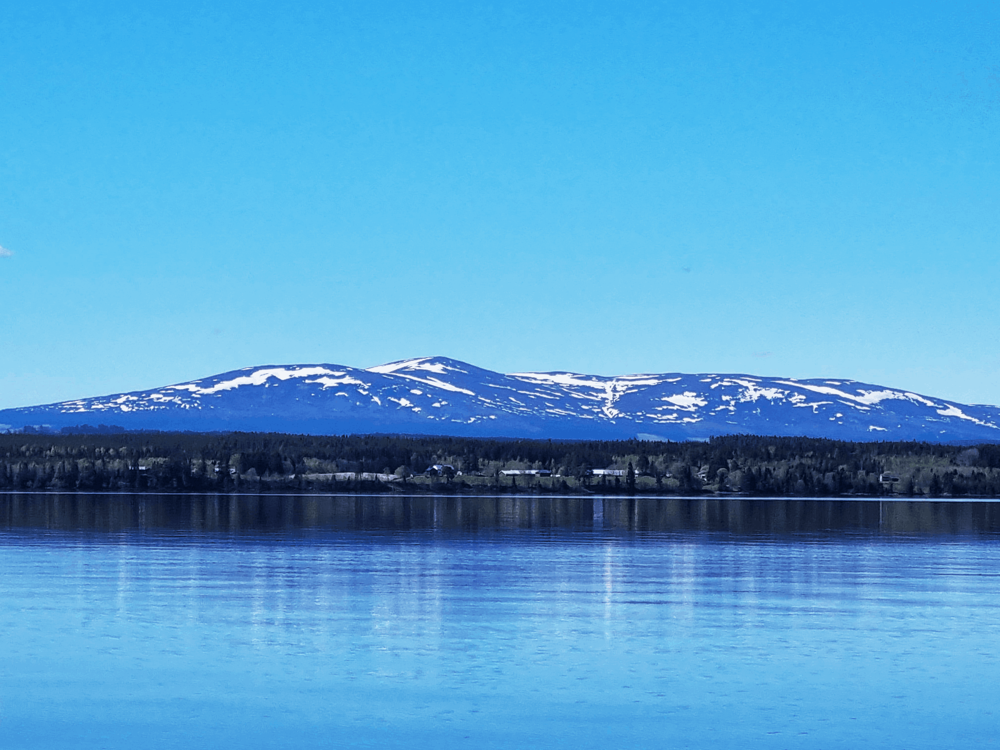

Vyn över Arvesund, Bydalen

Bildserie med redigerade bilder
Uppgiften gick ut på lära sig grunderna i bildbehandling. Headerbilden, den ovanför bildserien, fick fotograferas med valfritt motiv och sedan redigeras för att passa in på webbplatsens design. Därefter valdes tre bilder från en specifik mapp och redigerades så att de skulle passa in i samma bildserie samtidigt som de skulle kännas enhetliga och matcha webbplatsen. Redigeringen skedde i programmet Photopea och handlade mest om korrigering i form av ljusbalans, beskärning, ta bort objekt, färgläggning och färgkorrigering.